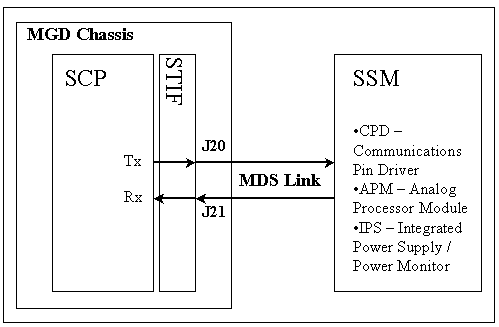

Proprietary to General Electric
Direction 5500113, Rev# 3
Discovery MR450 1.5T Service Methods
Module Version 1.0, Version Date 4/26/07
Proprietary to General Electric |
Diagnostics >> Peripherals >> TR DD MC System Path Check
This diagnostic confirms that the SCP can access the Dynamic Disable and Power Supply control registers on the SSM_CPD.
SCP
SSM_CPD
None
Illustration 1: SSM Diagnostic Block Diagram

None
Output values are judged pass or fail. In the event of failure, the details of the failure can be found in the GE System Log.
None
None